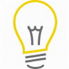

Day 6 - Minor details, "Side" and Isometric views
Completed: 2/4/2016

Note: Was tired today and could not focus.
- Step 1 - Minor Details, "Side" view
- Based on various images, add minor features and details to the "side" view, e.g. indentions, latches, and hinges.
- Step 2 - Minor Details, Isometric view
- Repeat step 1 for the isometric view.